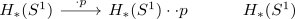

reduced Fp homology of eilenberg-mac lane space for an R-module vanishes
Proposition
Let $R \coloneqq \mathbb{Z}[p_i^{-1}] \subseteq \mathbb{Q}$ a localization for primes $p_i$ and $M$ an \(R\)-module. Then the reduced \(\mathbb{F}_p\)-homology of the Eilenberg-MacLane space vanishes, i.e. $\tilde{H}_*(K(M,n),\mathbb{F}_{p_i}) = 0$ for $n > 0$
Proof
reduction to single prime
use the restriction of scalars to restrict to the case $\mathbb{Z}[p_i^{-1}] = \mathbb{Z}[p^{-1}]$
$n = 1$
reduction to finitely generated case
Write $M \simeq \mathrm{colim}_{N \subseteq M, M \textrm{ f.g.}} N$ (cf. module as filtered colimit of finitely generated submodules) and use the fact that
- connected anima are closed under filtered colimits
- eilenberg-maclane space functor preserves filtered colimits
- homology commutes with filtered colimits
so it suffices to show that $\tilde{H}_*(K(N,1)) = 0$ for a finitely generated module $N$
Now use the classification of finitely generated modules over a pid (& localization of a pid as pid) to reduce it to a sum of
- $M = R/q^n$ for a $q \in \mathbb{Z}$ coprime to $p$
- $M = R$
Now kunneth formula for singular cohomology reduces it to the case of a single summand
$M = R = \mathbb{Z}[p^{-1}]$
Then $M$ is given as sequential colimit of
which using naturality of Hurewicz shows that the induced map on homology is

so $\tilde{H}_*(K(R,1)) = R$. Now use universal coefficient theorem for singular homology to get
since $\mathrm{Tor}$ vanishes (cf. localization is flat).
Then apply the universal coefficient Theorem for cohomology
$M = R/q^n$
Then we may use the integral cohomology of BZ/q^nZ and
$n$ arbitrary
use fiber sequence with homology-contractible fiber induces isomorphism